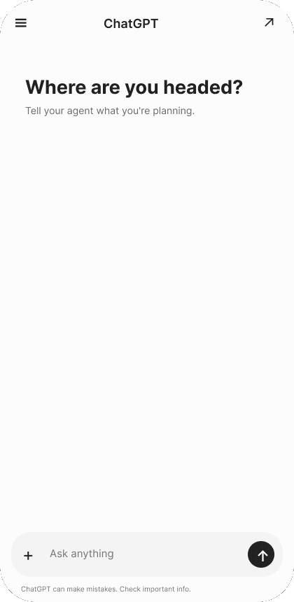
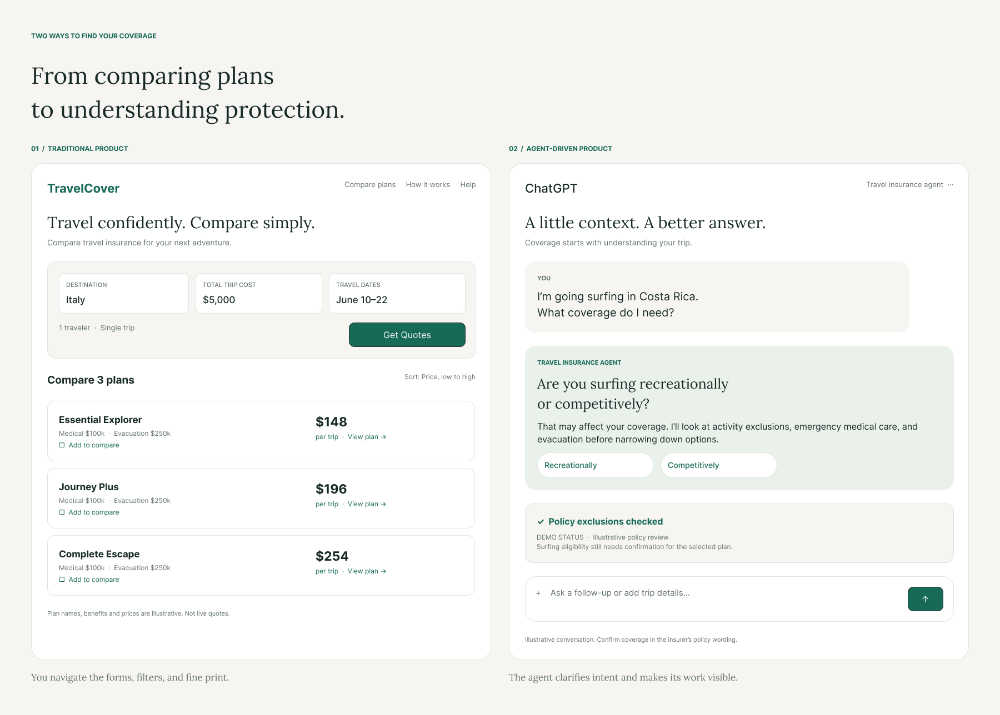
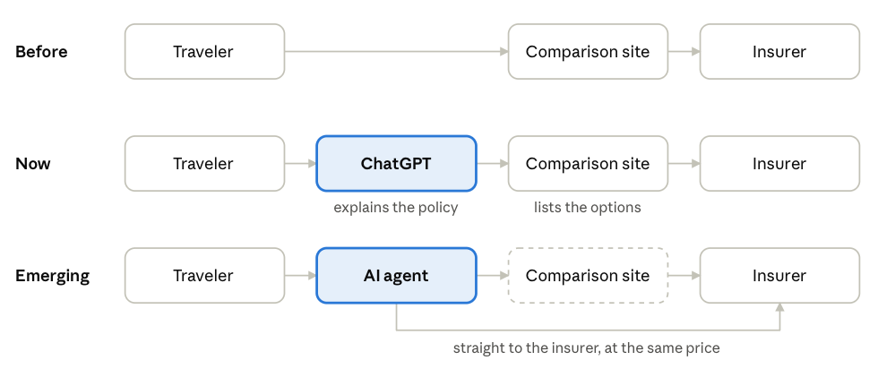

Travel insurance / Research
From Comparison Tables to Conversations
What four years working for a travel insurance aggregator taught me about how people buy travel insurance

01
A Short Preface
There is a certain kind of shopper who reads the fine print. He is rare, he is usually alone, and he is almost always right. For four years I watched people buy travel insurance, and for most of that time I assumed the job of a comparison site was to make the fine print unnecessary. A good table, a clear price, a recommended plan. Done.
I was half right. People did want to skip the fine print. They just didn't want to skip the understanding. Eventually they found someone else to do it for them.
This is a case study about that shift: what I saw, how sure I am, and what I think it means for anyone who builds comparison experiences. It is a pattern observed at one company over four years. It is not a forecast, and I'd ask you to read it that way.
02
Context
I spent four years working for a travel insurance aggregator, where I was a senior user experience designer. The job was UX, but it grew to include product design and, as the company downsized, marketing. I also helped with the adventure insurance subsidiary, which taught me more about travel insurance than I had planned to learn. Over that time I led roughly 100 moderated customer interviews. We were originally trying to learn how people used our site, how they behaved as travelers, and what they thought about travel insurance. We were not trying to learn about AI. That turned out to be the useful part.
I also spent a good deal of time in Hotjar session recordings, which are an underrated form of company. They don't flatter you, and they don't explain themselves.
03
Observation One: The Explanation Gets Outsourced
The first sign was small. Three years ago, a participant mentioned ChatGPT. That is why I asked: he had never heard of our site. Nobody on the team made much of it.
Then it kept happening. In our first year, no participants mentioned it. In the second year, two did. In the third, ten. By the fourth, there were too many to mention.
What they asked it was more revealing than the fact that they asked. The questions were not "which plan is cheapest?" Our table could answer that. They were closer to:
- I'm going to Italy with a pre-existing condition and a firm commitment to gelato. What insurance do I need?
- If my flight is late and the cruise ship leaves without me, who do I yell at, and is it covered?
- I'm heli-skiing in Norway. Does my plan cover being airlifted off the mountain I was just airlifted onto?
People used our site to find the options and used the chatbot to understand them. This is a sensible division of labor. It is also a slightly alarming one, if you are the site.

Example: Designing the agent’s decision process
- Traveler describes their tripDestination, activities, cost, concerns
- Agent identifies missing informationAsk only questions that materially affect coverage
- Is the information sufficient?NoClarify or escalateYesResearch options
- Verify policy details and compare suitabilityCoverage, exclusions, eligibility, current quotes
- Explain recommendation and request approvalTraveler makes the final purchase decision
04
Observation Two: Visitors Who Weren't Quite Visitors
In the last two years, the recordings began to show something I had not seen before: sessions that looked as though someone was visiting on a person's behalf.
These sessions stood out for two reasons: a Claude label hovering over the page, and cursor movement that looked more intentional than a typical visitor's. They were not common, but their number rose in the fourth year.
In two or three of these recordings, I noticed a blinking Claude logo hovering over the page. I'll say plainly what I think this is, and what I don't know.
05
What People Were Actually Buying
Here is the part I find most interesting, and the part a UX researcher is best placed to say.
The job was never "show me a list of prices." Price is the easy part of travel insurance. The hard part is a quiet, expensive question: if something goes wrong, will this actually pay?
Answering that means understanding exclusions, definitions, deadlines and conditions, which are written in a register that no one speaks aloud. A comparison table is very good at ranking. It is much less good at reassuring.
When people reached for a chatbot, they weren't abandoning comparison. They were adding the thing the comparison left out.
One further detail makes this plainer. A comparison site like SquareMouth or InsureMyTrip cannot price a plan lower than the insurer sells it direct. The price is the same either way, so the site's value was never the discount. It was the choosing: narrowing the field and making sense of it. That is precisely the work people began handing to an assistant, and an agent that goes straight to the insurer gives up nothing on cost.
The site once sat between the traveler and the insurer. Now the explaining often happens in an assistant first, and an agent can go to the insurer directly at the same price.

06
Implications & Limitations
Read implications & limitations
Let’s begin with the license, which people tend to treat as a locked door. It’s more of a coat check. If you click through to the insurer’s own site and buy there, the insurer holds the license, makes the disclosures, and binds the policy. The assistant hands you off and steps back, much like a good friend who recommends a tailor and doesn’t come into the fitting room.
Some awkwardness remains in what happens before the handoff. If the assistant discusses specific rates, steers you toward one policy, and earns a fee only when you buy, regulators may start to wonder whether it’s selling insurance without admitting it. A flat referral fee, or no fee, keeps things simple. A commission is where the lawyers come in, and the lawyers always come in.
Then there’s the API, which everyone assumes is the real obstacle. It is, in the practical sense. But it’s a symptom, not the disease. Insurers keep quote access private because they want to control who sells their products, protect their pricing, keep out the fraudsters, and avoid annoying the airlines and booking sites that send them business. The technology is not the problem. Insurers could open the door tomorrow if they wanted this particular guest, and some will once AI assistants start sending them customers worth having.
In the meantime, there’s a workaround that requires no one’s blessing. A browser agent can fill in each insurer’s quote form and bring back the numbers. It’s slower and a bit fragile, and some sites won’t love it, but it works today as long as you’re watching.
So the realistic arrangement is this: the assistant does the research, gathers the quotes, and sends you to the insurer’s checkout. The license is the easy part. The harder questions are access, incentives, and who answers for it when the assistant misreads an exclusion. That last one is worth settling before anyone buys anything.
07
Reflection
What I'd do differently: make the site easy for an agent to read, if that can be done. I would also stop assuming that was the whole job, since an agent can go straight to the insurer at the same price.
What I'd research next: whether being easy to read gives an agent any reason to come through us at all, or whether that only matters if we are also the best place to understand what a policy covers. I don't know. It is the question I would want answered before anyone calls it a funeral.
What I learned, in the end, is an old lesson wearing new clothes. People do not want information. They want to feel they have understood something before they pay for it. The tools change. That does not.